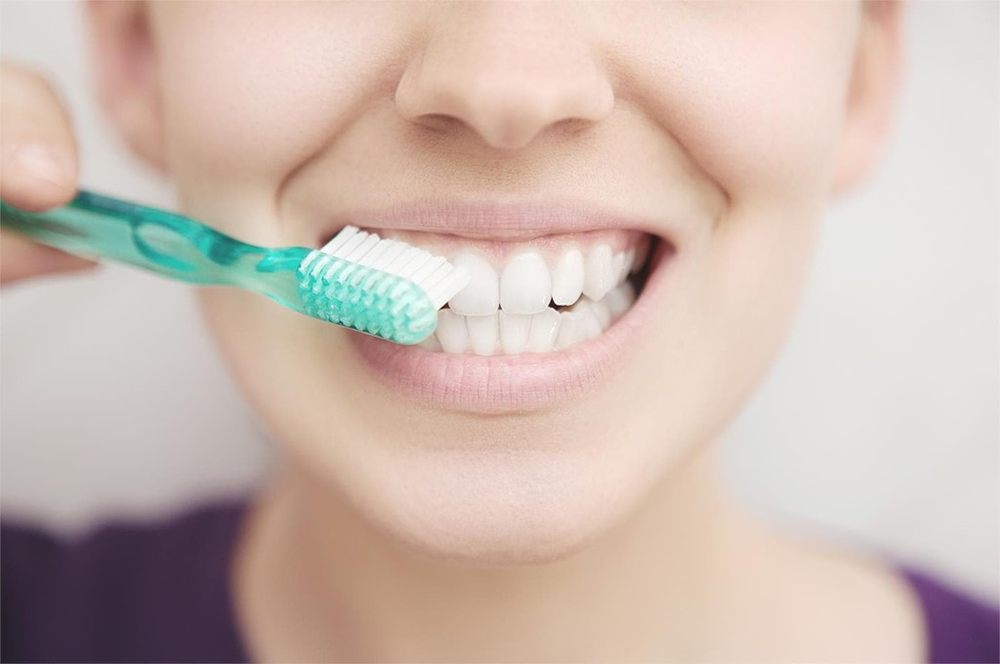
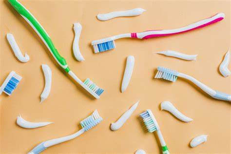

¡Lee algunos de nuestros tips para el cuidado de tus dientes!
TIPS PARA CEPILLADO

1.- Cepillo y pasta de dientes adecuados: Utiliza un cepillo de dientes de cerdas suaves o medianas y una pasta dental con flúor. El flúor ayuda a prevenir la caries dental.
2.- Cepillado frecuente: Cepíllate los dientes al menos dos veces al día, preferiblemente después de cada comida. Si no puedes cepillarte después de cada comida, al menos hazlo por la mañana y antes de acostarte.
3.- Técnica de cepillado adecuada: Coloca el cepillo en un ángulo de 45 grados hacia las encías y realiza movimientos cortos y suaves hacia adelante y hacia atrás. No ejerzas demasiada presión para evitar dañar las encías.
4.- No te olvides de las áreas difíciles: Cepilla la superficie externa, interna y la parte superior de los dientes, así como la lengua y el paladar.
TIPS DE PASTA DENTAL
1.- Fluoruro: Busca pastas dentales que contengan fluoruro. El fluoruro es un mineral que fortalece el esmalte dental y ayuda a prevenir la formación de caries.
2.- Control de la cantidad: Utiliza una cantidad adecuada de pasta dental. No es necesario cubrir completamente el cepillo con pasta. Una pequeña cantidad, del tamaño de un guisante, es suficiente para obtener beneficios efectivos.
3.- Atención a los ingredientes: Si tienes sensibilidad dental, busca pastas dentales diseñadas específicamente para este problema. Algunas contienen ingredientes que ayudan a reducir la sensibilidad.
4.- Blanqueamiento dental: Si buscas una pasta dental para blanquear los dientes, elige aquellas que estén formuladas para este propósito. Sin embargo, ten en cuenta que los resultados pueden variar y que es importante seguir las indicaciones del fabricante para un uso seguro y efectivo.
TIPS DE CEPILLO DENTAL

1.- Tipo de cerdas: Opta por un cepillo dental con cerdas suaves o extra suaves. Las cerdas más duras pueden dañar las encías y el esmalte dental.
2.- Tamaño y forma: Elige un cepillo dental que se adapte cómodamente a tu boca y te permita alcanzar todas las áreas difíciles. Los cabezales pequeños son ideales para llegar a rincones difíciles, como la parte posterior de la boca.
3.- Técnica de cepillado: Asegúrate de cepillar todas las superficies de los dientes, incluidas las superficies internas, externas y de masticación. Usa movimientos suaves y circulares, y no apliques demasiada presión para evitar dañar las encías y el esmalte.
4.- Reemplazo regular: Cambia tu cepillo dental cada 3 a 4 meses, o antes si las cerdas están desgastadas o deformadas. Un cepillo desgastado no limpia de manera efectiva.
TIPS DE HILO DENTAL
1.- Técnica correcta: Toma aproximadamente 45 cm (18 pulgadas) de hilo dental y enróllalo alrededor de tus dedos medios, dejando unos 5-7 cm (2-3 pulgadas) de hilo entre ambos dedos. Utiliza los dedos índices para sostener y guiar el hilo entre los dientes.
2.- Movimientos suaves: Desliza suavemente el hilo dental hacia arriba y hacia abajo entre cada diente, formando una "C" alrededor del diente y llevando el hilo debajo de la línea de las encías. Evita movimientos bruscos que puedan lastimar las encías.
3.- Usa hilo dental adecuado: Puedes elegir entre diferentes tipos de hilo dental, como el encerado, no encerado, con sabor, cintas dentales o hilo dental más grueso para adaptarse a tus preferencias y necesidades dentales.
4.- Frecuencia: Utiliza el hilo dental al menos una vez al día, preferiblemente antes de cepillarte los dientes. Esto ayuda a eliminar la placa y los restos de comida que el cepillado por sí solo no puede alcanzar.